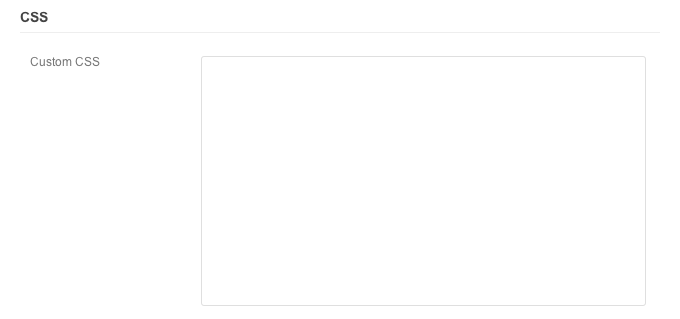

Typegrid
Thanks for your purchase, your support is truly appreciated!
01Getting Started
Thanks for your purchase! We know that you're excited to get your site up and running and we want to help. Please take the time to read through this documentation as it will help to answer most of your questions. If you encounter any issues or discover any bugs please contact us in our support forum so that we may help you.
How To Find Your Purchase Code
To create an account on the support forum requires your purchase code. See the picture below for help finding your code.

02Installing
Installing your theme is pretty easy! After downloading and uncompressing your theme you should find a file
named Typegrid.zip. This is a compressed file containing all of the required templates and
images required for the theme to function properly.
Install Theme
- Click on Themes in the Appearance Menu
- Click on the Install Themes tab
- Click the Upload link
- Select the
Typegrid.zipfile - Click Install Now
Activate Theme
- Click on Themes in the Appearance Menu
- Click on Activate under the Typegrid theme
Finding Theme Options & Modules
As soon as you've activated your theme, you will see a new link appearing at the bottom of the dashboard sidebar with your theme name. This is where all of your theme options and theme modules are.
02.1Importing Demo Content
This step is optional. If you don't want to import any extra pages and texts to your site, you can skip to the next section. If you want a base similar to the demo site to work on and edit (mainly for content layouts and text formats), this is for you.
Importing
- Click on Import in the Tools Menu
- Click on the WordPress link
- Install the plugin it asks for and activate, if you haven't already installed it.
- Now you should see a select button on the Import > WordPress page.
- Upload the .XML file that can be found in /resources/XML/ folder of the theme-package.zip file. Choose if you want to import media or not (images).
- Wait for the import process to finish. When it's finished it will say so.
- Go to Appearance > Menus and add the menu areas to for example header.
- Your page should now look similar to the demo page. Refer to the Frontpage section "Setting up a Static Front Page" if you want to setup a static front page (non-blog)
02.2Theme Updates
If this is your first-time install, you can skip this step.
If a new version of the theme is released (for example if we add new features or fix some bugs), you need to do the following to update your theme:
- Download the latest version from your ThemeForest "downloads" tab.
- Unzip the package file and locate the theme.zip to upload.
- Upload the theme and activate it (with new version number), just as you did on first-time install.
- Copy over your custom.css and custom-functions.php to the new theme if you've made customizations. Your admin settings will be saved.
03.1Options: General
Theme Style
Change the theme base style by selecting an option from the dropdown box.
Custom Stylesheet
Instead of editing style.css, enable the custom.css file in options. In this file you can create
new styles or override existing styles. By doing this, you will be able to easily install a new updated
version of the theme and copy over your custom styles to it.
Favicon
Upload favicon by clicking the Select Image button and selecting from Media Library. As an example, a 16x16 px .PNG image is often used.
Afterwards, select the Full Size option and click the Insert into Post button.
RSS Feed
If you use a service such as FeedBurner enter full URL of your feed.
Analytics Script
If you use a service such as Google Analytics paste your tracking code in the box and set whether you want this script to load in the header or the footer of your site.
03.2Options: Blog
Most of the blog options are self-explaining, however we will clarify a few options to make sure they are understood correctly.
Featured Slider
- Enable - This is where you enable the featured post slider. You can also choose to include featured posts in the content area. This means that the featured posts in the slider also will be shown below in the blog list. If disabled, only the amount of visibile featured posts will be excluded.
- Heading - Optional text title above the slider. Leave blank for no title.
- Category - Set the blog category that featured posts will be shown from. It is a good idea to create a category called for example "Featured". Simply add this category to the posts you want to feature, and when you want to remove it, you simply remove the Featured category from the post.
- Number of Posts - Pick the the max amount of posts to show in the slider.
Newsflash
What we call "newsflash" is the dark block shown at the top of blog home and/or single pages. It lists most discussed entries (most popular), most recent posts and recent comments. You can enable and disable them as you see fit.
03.3Options: SEO
Title
- Site Name
- Append the site name to the title of each post.
- Separator
- The separator to display between the site name and the page/post title.
Home Page
- Title
- Set a custom title for the home page.
- Meta Description
- The home page meta description.
- Meta Keywords
- The home page meta keywords.
Robot Meta Tags
noindex- Do not allow search engines to index the selected page types.
noarchive- Do not allow search engines to archive the selected page types.
nofollow- Instruct search engines not to follow links on the selected page types.
noodp,noydir- If your site is listed in DMOZ or the Yahoo Directory search engines will use descriptions from these sites instead of your meta description. Select the options here to prevent this.
03.4Options: Header
Header options are for the most part self-explaining. However, we would like to clarify the logo option.
- Custom Logo - To upload your logo image, click Select Image. Then upload your image and click insert into post. We suggest using a .PNG logo with transparent background. 40px height is ideal.
03.7Options: Styling
Advanced Styling
The first thing you need to do to use the styling options is to enable it. This will load a style-advanced.css in the theme.
Theme Color
- Main Color - Change the base color for your theme.
- Secondary Color - Change the color of comment-count bubbles and audio format post progress/volume bars.
Body
- Set the body background color and an optional background image.
04.1Modules: Login
Enable
Enable a custom login page.
Logo
Upload your own logo and change the logo URL. By default your login page shows a WordPress logo and links to wordpress.org.
Colors
Change the background, link, and link hover colors.
CSS

Customize the page by including your own CSS to override default WordPress styles.
04.2Modules: Maintenance
Enable Maintenance Mode
Allow others to work on the site while disabling access from visitors. If you need to quickly modify a template or adjust the CSS on your site this is a perfect option to use. Visitors will be temporarily redirected to a maintenance page.
The access role option allows you set what type of users have access to your site.
04.4Modules: Social
The social module allows you to quickly and easily manage your social media links.
Create Link
To create a new link enter the URL, set a Label, and select an Icon. As an example:

- URL - http://twitter.com/wpbandit
- Label - Twitter
- Icon URL - Click Twitter icon in the icon box
Once you are done click the Add Item button. Links are automatically displayed in theme's footer. If you make any updates be sure to click the Update button.
Order Links
Drag link items using the "bars" to reorder link items.
05Page Templates
To see examples of each page template, please visit our theme demo page.
To set a page template for your page, do the following:
- Edit or create the page you want to use.
- In the dashboard, locate the second block to the right called "Page Attributes".
- Find the "Template" dropdown in this block. Select the template you want to use and hit save/update.
- You now use the page template! All additional options, if there are any, will appear below the large text field.
05.3Non-template: Contact
We recommend using the Contact Form 7 plugin for your contact page. You are free to use any plugin you are comfortable with but it is what we use.
How To Setup Your Contact Page
- Install and activate Contact Form 7
- Go to Contact in your WordPress dashboard
- Edit Contact form 1
- In the form field, paste the following:
<p>[text* your-name] <label>Your Name</label></p> <p>[email* your-email] <label>Your Email</label></p> <p>[text your-subject] <label>Subject</label></p> <p>[textarea your-message]</p> <p>[submit "Send Email"]</p>
- Copy the code in the brown field and insert it on the page where you want your contact form.
Example of full contact page (as seen on demo site)
[googlemap address="Stockholm, Sweden" fullwidth="true" height="300" zoom="13"] [column size="one-fourth"] <h3>Contact Info</h3> 30 South Park Avenue San Francisco, CA 94108 USA <strong>Phone:</strong> (123) 456-7890 <strong>Fax:</strong> +08 (123) 456-7890 <strong>Email:</strong> contact@company.com <strong>Web:</strong> companyname.com [/column] [column size="three-fourth" last="true"] <h3>Get in touch</h3> [contact-form-7 id="1310" title="Contact form 1"] [/column]
Remember to use the HTML-tab of the WordPress editor when pasting this code. You can switch back to visual editor after you have inserted it.
06Shortcodes
Shortcodes are easy to add and access directly from the WordPress text editor. Locate the following icon and click on it:
All available shortcodes will be shown in the expanded dropdown. If additional options exist for the shortcode, a popup will open up. Otherwise it will be directly inserted when you click on it.
08Managing Images
Uploading and usage
Whether you are adding a portfolio item, a blog post, a gallery format post or upload images to your gallery template the same method is always used in our themes.
- Go to the page/post/portfolio item you want to edit.
- Click the Add Media button.
- Upload your images.
- Since you uploaded the image(s) on this page, they will now be attached to it. Our themes uses these attached images and displays them.
- When you've uploaded your images, you can now manage your attached images by selecting this option:
- To re-order images, simply drag them around. To remove them, simply delete them.
- Captions will appear in the bottom right corner on top of the image.
- If you want to link the image, add your link in the description field of the image (works only on some specific places).
- In order for the images to show up on thumbnails you need to pick one of your images and click "Set Featured Image".
Additional Notes
- You never need to click the "Insert Image" button unless you want to add a default-type WordPress gallery on the page content section. In all other cases, our themes grabs the attachments automatically.
- If you want to add an image in the content of the page, but it shows up in the slider as well, do the following:
- Go to Media > Add New in the WordPress sidebar.
- Upload the image you don't want to show up in the gallery/slider.
- Copy the direct link to this image.
- Insert it on the page via the HTML-tab of the editor by using the image src tag. Example:
<img src="myimagelink.jpg" alt="description" />
(This is an area we are looking to improve for greater flexibility in a future update)
Featured Image on Regular Pages
If you upload and set an image as featured on a regular page, it will show up in the header. Image captions will be large-text, centered on top of the image. Image description will show up in a small box below the caption.
09Final Notes
Things which we have not yet covered in this documentation are most likely standard WordPress features. Here is some more useful information.
Questions about how to use images? Refer to the Managing Images section.
Adding items to your sidebars - widgets
To add items to your sidebars, you need to use WordPress widgets. In the WordPress dashboard you need to go to Appearance > Widgets to edit your sidebars.
To insert whatever code or text you want in the sidebar, simply use one or multiple "Text" widget blocks. This widget will give you a textfield that you can add anything to, including text, html and shortcodes.
Uploading and managing images
Images are a big part of most themes, and we use WordPress default gallery functionality for most image features. Read more about media uploads and usage below.
Regenerating thumbnail-sizes
If you used another theme for your website before changing, you most likely will see that old thumbnails are of the wrong size. This is because most themes have custom thumbnail sizes. In order to easily fix this, all you need to do is download, activate and run a plugin called "Regenerate Thumbnails".
Better blog pagination
While many are happy with the "Next" and "Previous" links at the bottom of the blog, archive and search pages - others want a better pagination. This is why all of our themes support the plugin WP-PageNavi, which solves this issue. Install and activate it, and it will work right away.
Changing theme language
In order to change language of your theme you need to edit the language .pot file in the /languages/ folder of the theme. This can be easily done with a program such as PoEdit. Your favourite text editor should also work, such as Notepad++.